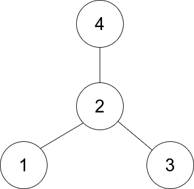

| Category | Difficulty | Likes | Dislikes |
|---|---|---|---|
| Algorithms | Easy | 1940 | 182 |
bloomberg | google | amazon | microsoft
There is an undirected star graph consisting of n nodes labeled from 1 to n. A star graph is a graph where there is one center node and exactly n - 1 edges that connect the center node with every other node.
You are given a 2D integer array edges where each edges[i] = [ui, vi] indicates that there is an edge between the nodes ui and vi. Return the center of the given star graph.
Example 1:

Input: edges = [[1,2],[2,3],[4,2]]
Output: 2
Explanation: As shown in the figure above, node 2 is connected to every other node, so 2 is the center.Example 2:
Input: edges = [[1,2],[5,1],[1,3],[1,4]]
Output: 1
Constraints:
3 <= n <= 105edges.length == n - 1edges[i].length == 21 <= ui, vi <= nui != viedges represent a valid star graph.